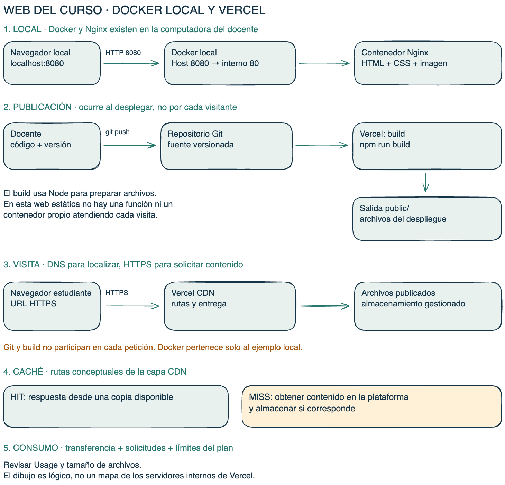
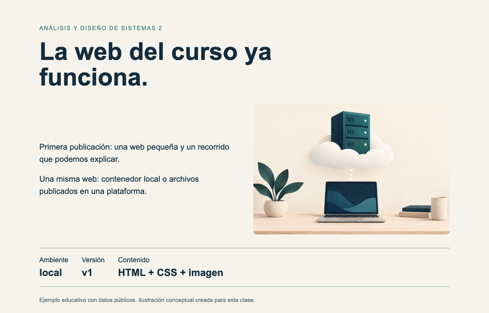
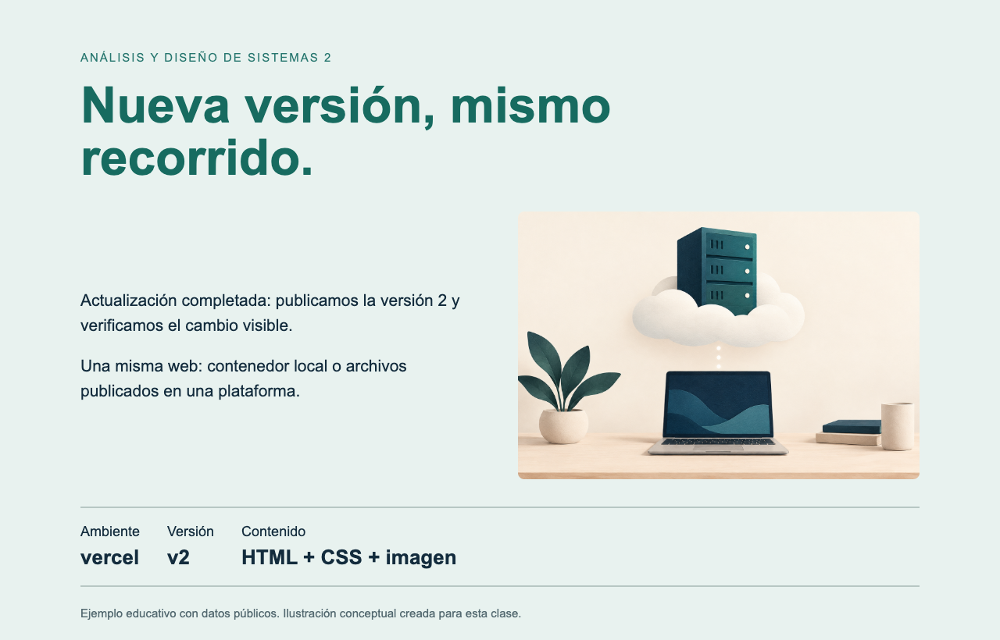

Publicación estática en Vercel
1. Configuración de la plataforma
| Campo | Valor previsto |
|---|---|
| Root Directory | semanas/11-cloud-paas/codigo |
| Framework Preset | Other |
| Build Command | npm run build |
| Output Directory | public |
La plataforma publica archivos; Docker queda en la ejecución local.
Tabla ilustrativa, no captura de la consola Vercel.
2. Dos recorridos distintos

Abrir diagrama a tamaño completo
Publicación: código, Git y build. Visita: dominio, HTTPS, CDN y archivos.
3. Preparación y publicación
contenido.json: { "version": "v1" }
npm run build
Build listo: v1. Archivos estáticos en public/.El docente publica fuentes en Git. Vercel ejecuta el build y ofrece la URL del despliegue cuando está Ready.
La URL real y los logs remotos deben comprobarse en la cuenta del docente.
4. Fallo local y corrección
node build.mjs v3 Error: Versión no válida. Usar v1 o v2 en contenido.json. node build.mjs v2 Build listo: v2. Archivos estáticos en public/.
El argumento cambia la salida local. Para publicar v2 mediante Git, cambiar contenido.json y enviar ese cambio válido.
¿Qué falta comprobar después del build? Deployment Ready, URL y contenido real.
5. Contenido actualizado


La misma fuente puede servirse en entornos distintos.
La etiqueta vercel no demuestra ubicación remota. No hay capturas fabricadas de Vercel ni encabezados CDN simulados.